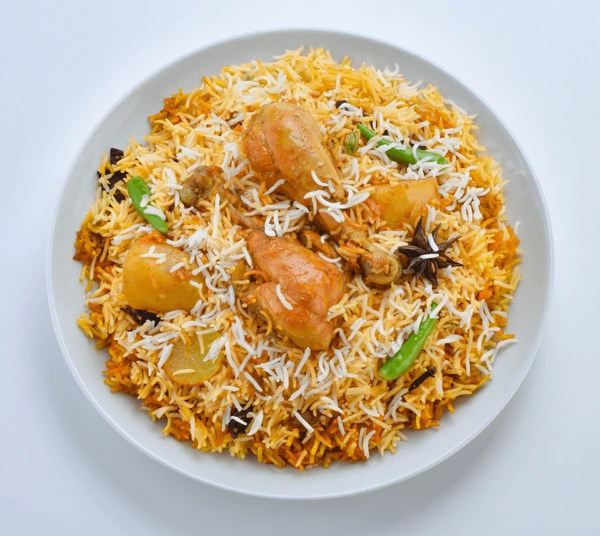

Home
Biryani

Description
Biryani is a mixed rice dish originating in India, made with rice, meat (chicken, goat, lamb) or
seafood (prawns or fish), and spices.
Ingredients
- 2 tablespoons vegetable oil, divided
- 2 small potatoes, peeled and halved
- 1 large onions, finely chopped
- 1 clove garlic, minced
- ½ tablespoon minced fresh ginger root
- 1 medium tomatoes, peeled and chopped
- ½ teaspoon salt
- ½ teaspoon ground cumin
- ¼ teaspoon chili powder
- ¼ teaspoon ground black pepper
- ¼ teaspoon ground turmeric
- 1 tablespoon plain yogurt
- 1 tablespoon chopped fresh mint leaves
- ¼ teaspoon ground cardamom
- ½ (2 inch) piece cinnamon stick
- 1 ½ pounds boneless, skinless chicken pieces cut into chunks
- ½ pound basmati rice
- 1 ¼ tablespoons vegetable oil
- ½ large onion, diced
- 2 ½ pods cardamom
- 1 ½ whole cloves
- ½ (1 inch) piece cinnamon stick
- ¼ teaspoon ground ginger
- ½ pinch powdered saffron
- 2 cups chicken stock
- ¾ teaspoon salt
Steps
- Gather all ingredients.
- Heat 2 tablespoons of oil in a large skillet. Fry potatoes in hot oil until lightly browned, about 3 to 5 minutes. Remove to a paper towel-lined plate to drain; set aside.
- Add remaining 2 tablespoons of oil to the skillet. Add onions, garlic, and fresh ginger; cook and stir until onion is soft and golden. Add tomatoes, salt, cumin, chili powder, pepper, and turmeric; cook, stirring constantly, for 5 minutes.
- Stir in yogurt, mint, ground cardamom, and cinnamon stick. Cover and cook over low heat, stirring occasionally, until tomatoes are cooked to a pulp. It may be necessary to add a little hot water if mixture becomes too dry and starts to stick to the pan.
- Add chicken and stir well to coat. Cover and cook over very low heat until chicken is tender, 35 to 45 minutes. There should only be a little very thick gravy left when chicken is finished cooking. If necessary cook uncovered for a few minutes to reduce the gravy.
- Meanwhile, make the rice: Wash rice well and drain in a colander for at least 30 minutes.
- Heat oil in a large skillet. Add onion; cook and stir until golden. Add cardamom pods, cloves, cinnamon stick, ground ginger, and saffron; stir in rice until coated with spices.
- Heat stock and salt in a medium pot until hot; pour over rice and stir well.
- Add chicken mixture and potatoes; stir gently to combine. Bring to a boil.
- Reduce heat to very low, cover with a tight-fitting lid, and steam for 20 minutes without lifting the lid or stirring.
- Spoon biryani onto a warm serving dish.